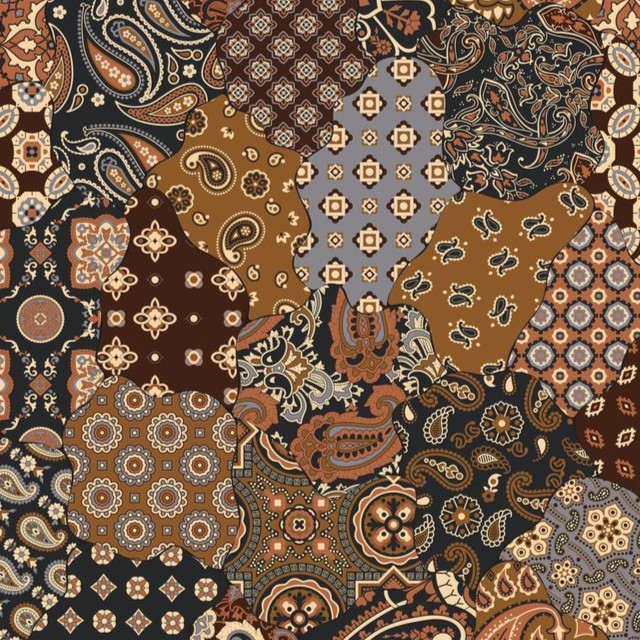
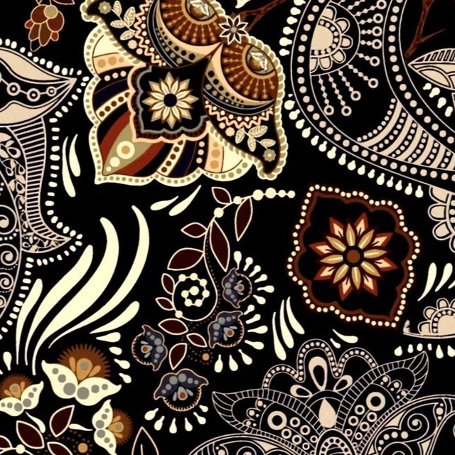
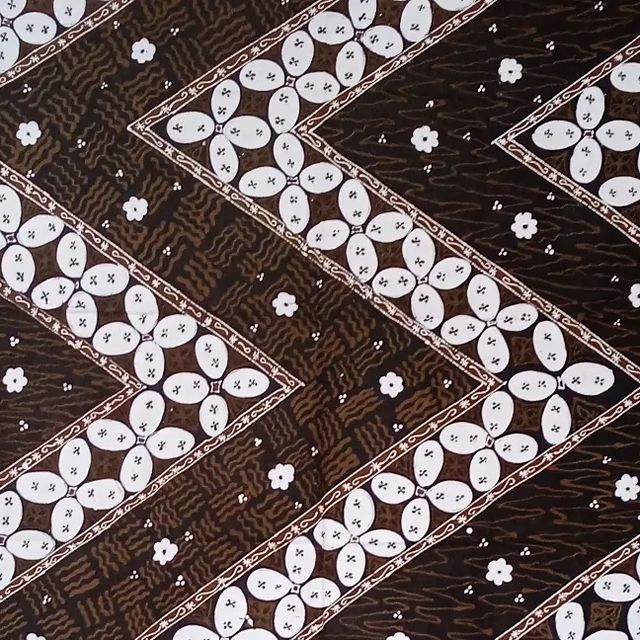

Batik Indonesia.
Warisan Budaya.
Identitas Bangsa.
Batik bukan sekadar kain bermotif. Ia adalah cerita, filosofi, dan jati diri bangsa Indonesia yang diakui dunia. Setiap goresan canting membawa makna mendalam, menghubungkan masa lalu dengan masa kini.
Jelajahi Motif




Perjalanan Batik
Abad 12-15
Era Majapahit
Batik mulai dikenal di kalangan kerajaan sebagai simbol status sosial
2 Oktober 2009
Pengakuan UNESCO
Batik Indonesia diakui sebagai Warisan Kemanusiaan untuk Budaya Lisan dan Nonbendawi
Era Modern
Batik Mendunia
Batik menjadi fashion global dan kebanggaan Indonesia di mata dunia